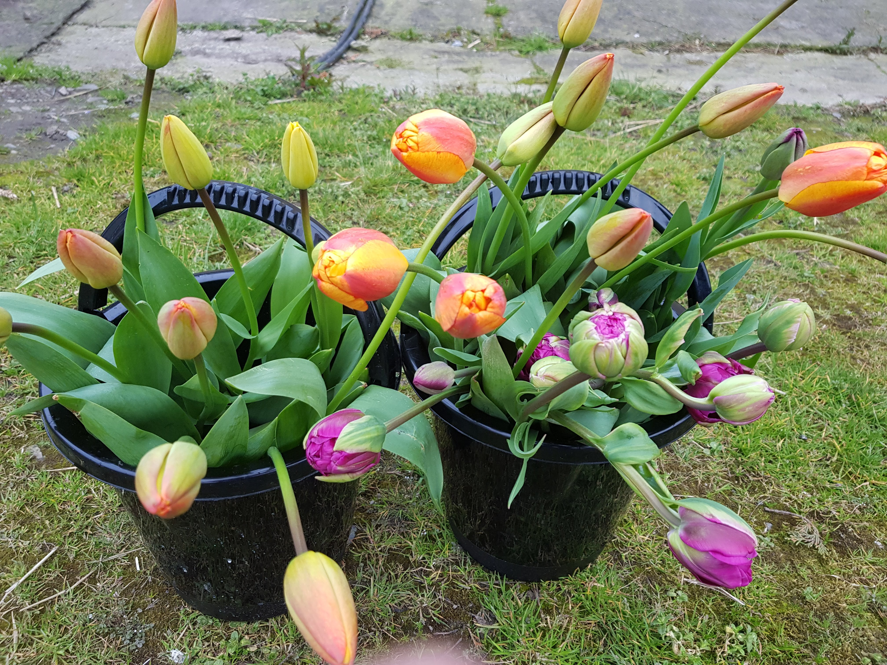

Flowers
Fresh cut flowers are available from April to September. Local, seasonal flowers will keep well in a vase for approximately two weeks with proper care and some will last longer. All flowers are grown outdoors with minimal inputs.
Flowers are available to purchase at various Farmers Markets around the midlands. Check out Instagram for the most up to date locations. Flowers can also be purchased directly from the farm during the day in bouquets or bunches. Contact us to confirm times and availability prior to arriving.
-
Specialities include:
- Tulips
- Dahlias
- Sweet peas
- Roses
- Wild flowers including daisies, cornflowers
- Cosmos
- Ranunculus
- Anemones
